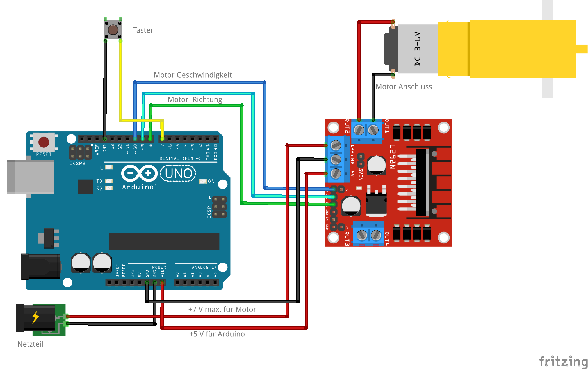

Die Firma Bambu Labs stellt auf ihrer Homepage die Druckvorlage für diese Kugelbahn zum Download zur Verfügung: Marble Run V3
Wir haben das Modell ausgedruckt und im Schaukasten aufgebaut. Durch einen Druck auf den Taster startet der Motor für den Kugel-Lift:
Das Modell wird mit folgender Schaltung gesteuert:

Der enstprechende Programmsketch ist relativ kurz:
/*
Deklaration und Initialisierung der Variablen
*/
int motor = 10; // Motor-Pin zur Geschwindigkeiteinstellung
int in1 = 9; // Motor-Pins zur Richtungseinstellung
int in2 = 8;
int taster = 7; // Taster-Pin
int zeit = 0; // Zeitvariable
/*
Setup wird einmalig beim Start ausgeführt
*/
void setup() {
pinMode(motor, OUTPUT); // Motor ist ein Ausgangs-Pin
analogWrite(motor, 100); // Geschwindigkeit: 100 von max. 255 Stufen
pinMode(in1, OUTPUT); // Motor-Pins sind Ausgänge
pinMode(in2, OUTPUT);
pinMode(taster, INPUT_PULLUP); // Taster-Pin ist ein Eingang,
// der automatisch auf HIGH gezogen wird.
}
/*
loop wird immer wieder ausgeführt
*/
void loop() {
if (digitalRead(taster) == LOW) { // Wenn der Taster gedrückt ist,
zeit = 15000; // dann soll der Motor 15000 ms = 15 Sekunden laufen
while (digitalRead(taster) == LOW) { // Warte, bis der Taster losgelassen wurde
delay(1);
}
}
if (zeit > 0) { // Wenn noch Laufzeit übrig ist,
digitalWrite(in1, HIGH); // dann soll der Motor laufen
digitalWrite(in2, LOW);
zeit = zeit - 1; // und die Zeit nach unten gezählt werden
} else { // sonst
digitalWrite(in1, LOW); // soll der Motor stoppen
digitalWrite(in2, LOW);
}
delay(1); // 1 ms Pause zwischen den loop-Runden
}